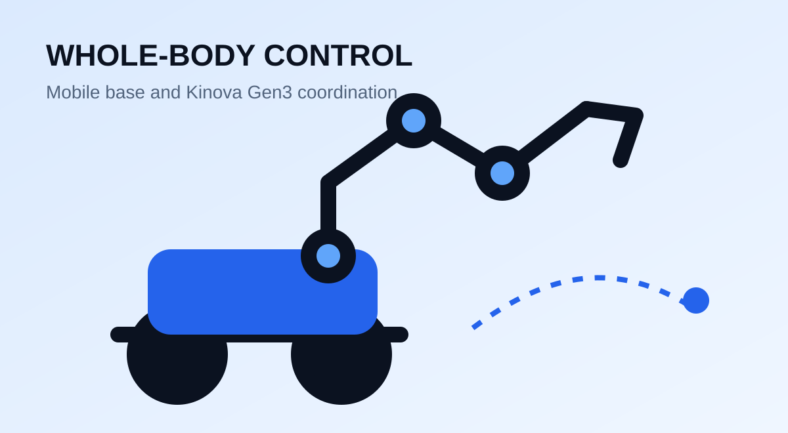
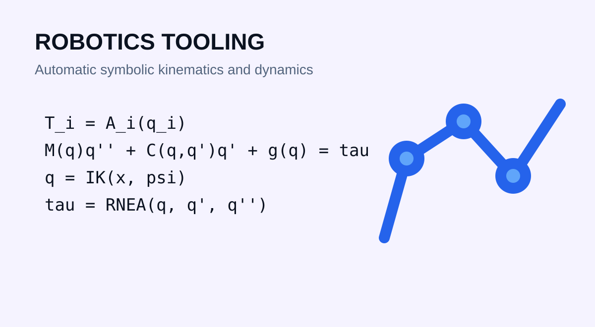
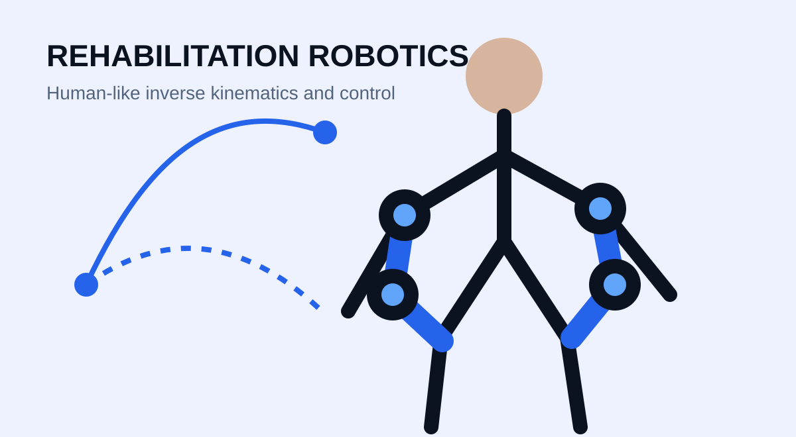

Robotics Controls | Montréal, QC, Canada
David Bedolla, PhD
Motion Control, Trajectory Planning & Mobile Manipulation
I design motion controllers and test them on physical robots, from a mobile manipulator that tracks a target as its base turns to wearable robots that follow rehabilitation trajectories.

Robotics Controls & Manipulation
 Lab INIT Robots
Lab INIT Robots
About
How I take a control idea to the robot
My work connects kinematics and dynamics to what an operator needs the robot to do. I define the motion objective, fit it to the available command interfaces, and test the resulting behavior on the system.
At Lab INIT Robots, I adapted my earlier swivel-angle approach to joint-velocity control for an AgileX base and Kinova Gen3 arm. I specified the joystick workflow, reviewed AI-generated C++ and integrated and tested the ROS 2 system on the robot.
During my PhD, I implemented and tested predictive controllers on the 7-DoF ETS-MARSE exoskeleton. I used a Gaussian process to select an elbow posture and combined wearable EMG and IMU acquisition for mirror-rehabilitation experiments.
I also build and evaluate robotics tools, including a desktop trajectory planner, symbolic dynamics software, and an embedded manipulator emulator that lets an external controller drive a simulated plant through physical I/O.
Selected systems
Mobile manipulation, rehabilitation and robot simulation
Whole-body mobile manipulation
Whole-body mobile manipulation
A joystick demonstration on hardware and a separate task-priority study in simulation.

World-Frame Mobile Manipulation
One joystick controls the base and arm. In world-frame mode, the arm compensates as the base turns.
- Technical problem
- Maintain a world-frame end-effector pose while the mobile base moves.
- My contribution
- Designed the joystick workflow and odometry-based target conversion, reviewed AI-generated C++, and integrated the ROS 2 system. I resolved a conflict between competing arm command publishers.
- Hardware
- Physical AgileX base with a Kinova Gen3 arm.
- Stack
- ROS 2, C++, and Pinocchio.
- Validation
- Observed target compensation during base rotation and residual offset after extended motion. The launch example sets three ROS 2 publishers to 400 Hz and the base-command publisher to 120 Hz.
Analytical Whole-Body Control for a 10-DoF Mobile Manipulator
A simulated task-priority study coordinates the seven arm joints with three base coordinates.
- Technical problem
- Coordinate arm self-motion, base displacement, and Cartesian tracking in one 10-DoF system.
- My contribution
- Extended the analytical redundancy formulation with a task-priority hierarchy for end-effector, elbow, and mobile-base objectives.
- Simulation
- Kinova Gen3 and AgileX mobile-manipulator model.
- Stack
- Analytical kinematics and task-priority whole-body control.
- Validation
- Explored end-effector tracking and elbow posture during simulated arm and base motion.
Kinova Gen3 manipulation
Kinova Gen3 manipulation and control
Velocity control on the arm and a separate analytical pose-to-joint solver.
Kinova Gen3 Cartesian Control and Redundancy Resolution
PS4 teleoperation combines Cartesian commands with independent elbow reconfiguration on the physical robot.
- Technical problem
- Adjust the elbow posture while keeping the hand on its commanded path.
- My contribution
- Adapted my swivel-angle method to the Kinova velocity interface and tested Cartesian and elbow commands with a PS4 controller.
- Hardware
- Physical Kinova Gen3 and PS4 controller.
- Stack
- ROS 2, C++, and Pinocchio.
- Validation
- Demonstrated Cartesian motion and changes in elbow posture on the physical arm.

Analytical Kinova Gen3 Redundancy Resolution
A standalone position-level solver uses the swivel angle to select an elbow posture for a given end-effector pose.
- Technical problem
- Find a seven-joint configuration for a desired Cartesian position, orientation and elbow posture.
- My contribution
- Designed the analytical formulation and evaluated candidate joint configurations in a standalone experiment.
- Simulation
- Kinova Gen3 model in Isaac Sim.
- Stack
- C++, Pinocchio, and Isaac Sim.
- Validation
- Evaluated pose-to-joint solutions on the Kinova model.
Rehabilitation robotics
ETS-MARSE upper-limb rehabilitation exoskeleton
Laboratory experiments on a 7-DoF upper-limb exoskeleton.

Human-Centered Mirror Rehabilitation on ETS-MARSE
Wearable sensors capture motion on one arm to generate a reference for the exoskeleton on the other.
- Technical problem
- Turn intermittent motion measurements into smooth joint references for mirror exercises.
- My contribution
- Combined EMG and IMU acquisition in C++ and integrated the mirror workflow with swivel-angle inverse kinematics and real-time trajectory tracking.
- Hardware
- Physical 7-DoF ETS-MARSE upper-limb exoskeleton and wearable sensors.
- Stack
- LabVIEW RT/FPGA and C++.
- Validation
- The mirror experiment used a 1 ms LabVIEW Real-Time period and a 50 μs FPGA current-loop period.
Robust and Learning-Based Predictive Control on ETS-MARSE
Two physical experiments evaluated robust predictive control and predictive control with a learned model of residual dynamics.
- Technical problem
- Track constrained exoskeleton motion despite nonlinear dynamics, model error, and human-robot interaction forces.
- My contribution
- Implemented constrained MPC with integral super-twisting compensation and tested a separate Gaussian process residual model for learning-based MPC.
- Hardware
- Physical 7-DoF ETS-MARSE rehabilitation exoskeleton.
- Stack
- Gaussian Processes, model predictive control, C++, and LabVIEW RT.
- Validation
- The thesis reports 387 μs of computation for 10-step robust MPC and 687 μs for the separate learning-based MPC experiment.
Planning and simulation
Trajectory planning and simulated contact
PlannerGUI for URDF-Based Trajectory Planning
A C++/Qt desktop tool plans and previews joint and Cartesian trajectories for a Kinova Gen3 model.
- Technical problem
- Generate joint trajectories from Cartesian waypoints and show where the inverse kinematics fails to converge.
- My contribution
- Designed the URDF-driven workflow, specified separate path and timing stages, and reviewed AI-generated C++. A run that showed 100% progress with failed samples led me to require separate convergence counts and warnings.
- Simulation
- Kinova Gen3 robot model in a desktop environment.
- Stack
- C++, Qt, URDF, OpenGL, and Ruckig.
- Validation
- In a logged desktop run, all 5,001 samples converged for a five-second path sampled offline at a requested 1 kHz. Trajectory generation took 84.93 ms.
Cross-Simulator Tactile Sensor Adaptation
Gazebo and MuJoCo publish simulated gripper contact maps through a shared ROS 2 interface.
- Technical problem
- Expose gripper contact locations through the same interface in two simulators.
- My contribution
- Specified the shared contact-map interface, reviewed AI-generated adapters, and tested contacts at the tip, middle and lower part of the gripper.
- Simulation
- Gazebo and MuJoCo, informed by Lab-CORO's Isaac Sim TSF-85 implementation.
- Stack
- ROS 2, Gazebo and MuJoCo.
- Validation
- The two simulations displayed contact maps during grasp tests alongside whole-body control.
- Upstream
- Lab-CORO TSF-85.
Additional engineering work
Embedded control, modeling and software
Cable-driven lower-limb exoskeleton
Separated one-time motor setup from the periodic LabVIEW loop and removed duplicate calculations. The refactored loop supported torque-mode walking-trajectory tests on the hip and knee.
About 60 ms to 2 ms for a complete read-compute-write cycle, measured with the NI real-time clock.Symbolic RNEA and expression optimization
Built MATLAB tools for Standard and Modified DH models, branched robot structures, Recursive Newton-Euler dynamics, and automatic common-term grouping.
Grouped repeated terms in symbolic model files and checked equivalent outputs numerically.Digital-signal-controller robot emulator
During my master's research I developed a TI F28377S manipulator emulator. It exchanges torque inputs and joint-position outputs over analog I/O with an external controller.
Published plant update periods of 10 μs with Euler and 30 μs with fourth-order Runge-Kutta. Read the HIL paperMineKIN companion behavior
Designed and playtested a Minecraft companion system. I specified how companions retain their identity and inventory through upgrades, use supplies already on hand, and share duties at a home base.
Confirmed in-game that the same Totem still controlled the companion after an iron-to-diamond upgrade.Interactive simulator
Tune controllers across eight robotics systems
Open the dedicated simulator to adjust control gains and targets, inspect three-dimensional motion, and compare tracking and effort.
Experience
Robotics research and engineering roles
March 2026-Present
Associate Researcher
Lab INIT Robots, Montréal
- Designed Cartesian and elbow-posture control for a physical AgileX/Kinova Gen3 mobile manipulator and adapted the control design to the arm's joint-velocity interface.
- Defined single-joystick local and world-frame modes, reviewed AI-generated C++, and integrated and tested the ROS 2 nodes on hardware.
- Compared PID and super-twisting feedback during base rotation and observed improved tracking with super-twisting.
- Reviewed and tested simulated tactile contact adapters for Gazebo and MuJoCo.
March 2025-March 2026
Postdoctoral Researcher
ÉTS, Montréal
- Moved motor setup out of the periodic LabVIEW loop and eliminated repeated calculations. NI clock measurements put the full read-compute-write cycle at about 2 ms after the refactor, down from about 60 ms.
- Implemented a fixed-time sliding-mode torque controller and tested hip and knee motion on a walking trajectory with the physical exoskeleton.
March 2024-March 2025
Research Professor
Universidad Tecnológica de la Mixteca, Mexico
- Implemented and tested online particle swarm gain tuning on a physical 7-DoF exoskeleton in Montréal. The co-authored study reported over 20% lower tracking error than with heuristic tuning in tests with two participants.
- Reviewed the manuscript for a co-authored study on a three-finger adaptive gripper for activities of daily living.
January 2020-December 2023
Research Assistant
ÉTS, Montréal
- Implemented and evaluated LabVIEW Real-Time predictive controllers on the physical 7-DoF ETS-MARSE exoskeleton.
- Developed analytical inverse kinematics and used a Gaussian process to predict an elbow swivel angle from the desired hand pose.
- Combined EMG and IMU acquisition in C++ and ran mirror-rehabilitation experiments with sensor-guided trajectory generation.
- Simplified symbolic dynamics expressions and compared original and reduced models numerically.
Education
Robotics, embedded systems, and mechatronics
PhD in Robotics
École de technologie supérieure (ÉTS), Montréal
Learning-Based Upper-Limb Robotic RehabilitationMSc in Robotics
Universidad Tecnológica de la Mixteca
Hardware-in-the-loop simulation of a robotic manipulatorBEng in Mechatronics
Universidad Tecnológica de la Mixteca
CENEVAL EGEL Outstanding distinctionAwards and scholarships
Recognition supporting robotics research
ÉTS Excellence Award nomination
Doctoral scholarship
National Mexican Council of Humanities, Science and Technology
Master's scholarship
National Mexican Council of Humanities, Science and Technology
Selected publications
Research in intelligent rehabilitation and robot control
2023
Learning human inverse kinematics solutions for redundant robotic upper-limb rehabilitation
Engineering Applications of Artificial Intelligence, Volume 126, Part C, 106966.
Open DOI2023
Robust MPC with Integral Super-Twisting for Trajectory Tracking of an Exoskeleton Robot Arm
IEEE 14th International Conference on Power Electronics and Drive Systems.
Open DOI2024
Technical capabilities
Control design, robot integration and testing
Controls & Motion
Cartesian tracking, trajectory planning, whole-body control, swivel-angle redundancy resolution, robust MPC, torque control, and sliding-mode control
Robot Modeling & Manipulation
Mobile manipulation, robot manipulation, forward and inverse kinematics, Jacobians, rigid-body dynamics, RNEA, and teleoperation
Robotics Software
C++, ROS 2, Python, MATLAB/Simulink, CMake, Qt, Pinocchio, URDF, and Ruckig
Real-Time & Hardware
LabVIEW RT/FPGA, NI real-time targets, TI C2000, analog I/O, EMG and IMU acquisition, and hardware-in-the-loop testing
Simulation & Robot Learning
Gazebo, MuJoCo, Isaac Sim, Gaussian process models for kinematics and dynamics, and reinforcement-learning experiments in simulation
Contact
Get in touch
I am interested in robotics R&D involving motion control, manipulation and experiments on physical systems.